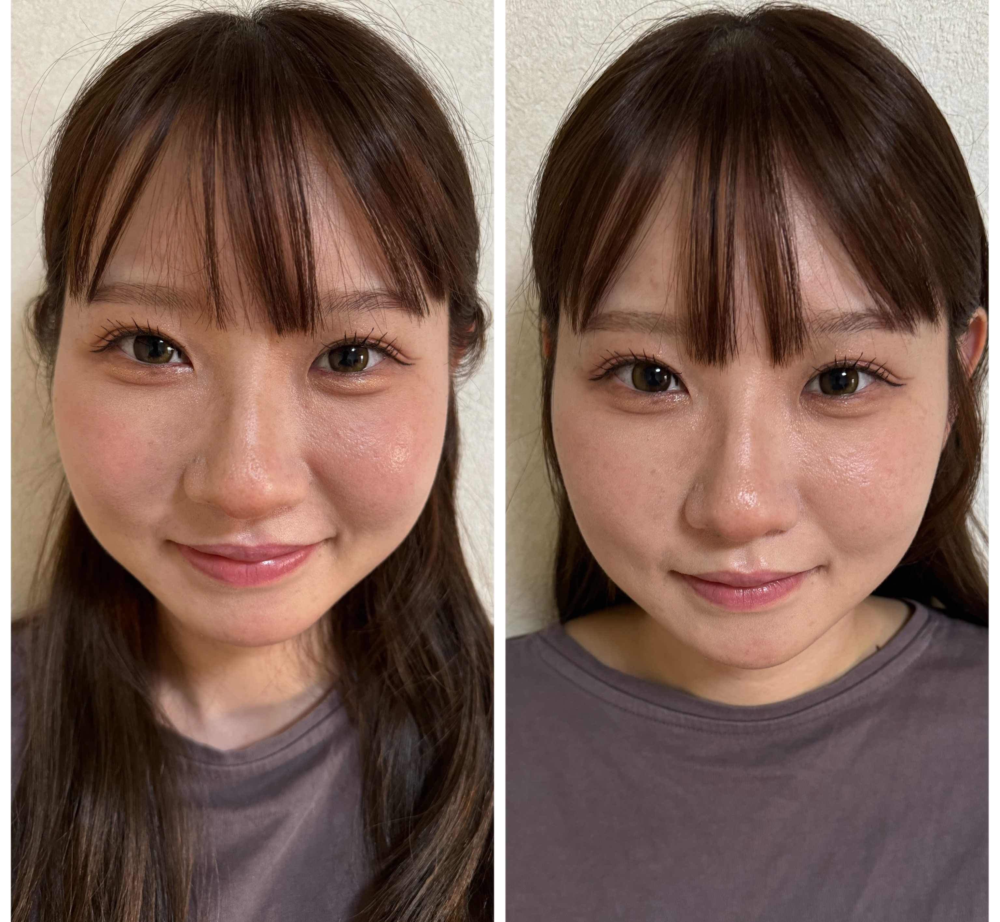

ーなりたい自分の顔への近道ー
理想式小顔矯正スクール
-
マンツーマン受講。最短2日間で小顔矯正のプロとして独立可能
-
未経験OK。「理論＋施術＋独立」の全て学べる“唯一無二”のスクール
リソウノコガオのフランチャイズに関しては、紹介限定です。 スクール生の方は、フランチャイズの審査可能です。
【これから手に職をつけたい方】
「お客様、自分や身近な人も全てキレイにできる！」
そんな小顔矯正の技術が身につけば・・と思いませんか？
-

未経験で、自分の手に職を持ちたい
-
独立し、自分のお店を持ちたいが、お客様を満足させれるほどの技術に自信はない
-
小顔矯正で独立・開業を考えているわけではないが、自分自身・身近な方をキレイにしたい
-
理想とする小顔をお客さんに自信とキレイを提供したい。
-
未経験の方でも
“プロの小顔矯正セラピスト”として
全ての人をキレイにする技術は身に付きます。

誰でもカンタンに学べて、実践できる技術があれば あっという間にプロになります。
-
リソウノコガオ所属セラピスト
の9割は未経験者
50代以上のセラピストも大活躍セラピスト未経験でもリソウノコガオ式小顔矯正を学べば、数ヶ月で活躍することが可能です。実際にリソウノコガオのセラピストは9割が経験無しです。更に、50歳過ぎてからプロのセラピストとして挑戦した方の中で、今では月に100万以上売り上げてる方もいます。意外かも知れませんが、セラピストの適齢期は40歳以降なのです。
-
「リソウノコガオ式小顔矯正」による
ビフォーアフターこちらのビフォーアフター写真はたった1回での変化です。 なんとなく変わったかも...という中途半端な変化ではなく、写真で見てはっきり違いがわかるほど、顔のサイズが変わっています。どなたでもこの効果抜群の小顔矯正術を習得することが可能です。
- 
Reason
選ばれる理由
-
01
リソウノコガオ独自の小顔矯正技術をマンツーマンで学べます！
-
マンツーマンにこだわる理由は、せっかく時間を作っていただいたにもかかわらず、大人数のために分からないところを聞けなかったり、もう少し実技を受けたかったと感じることを防ぐためです。また、リソウノコガオ式の小顔矯正を受けるお客様の満足度を確保するためでもあります。
-
.jpg)
-
-
02
短期間で確実な技術を学びたい
-
.jpg)
-
小顔矯正のプロになるために、必ずしもスクールに通う必要は無く、独学で学べないことはありません。
但し、短期間で確実に技術を身に付けるのであれば、専門スクールに通うことを強くオススメします。自力で学ぶコスト（時間）や学べる技術の専門性を考えると、スクールに通うことが圧倒的に賢い選択肢です。
-
-
03
リソウノコガオ独自の小顔矯正技術をマンツーマンで学べます！
-
何人施術しても変化が見られ、疲れにくい施術が可能です。
施術が体力的に負担になることはありません。セラピスト自身にも負担をかけない施術を提供するため、根本的な解決を目指して骨盤矯正も学んでいただきます。骨盤矯正専用の機械を使用することで、少ない力でも即効性のある施術が可能になります。 -
.jpg)
-
-
04
リソウノコガオ独自の小顔矯正技術をマンツーマンで学べます！
-
まず、小顔矯正の技術だけではなく、必ず手に職をついたものを人に受けて感動してもらうことが大切です。
手に職をつけた先に成功とは何かとなれば感動を多くの人に感じてもらうことです。「当スクールの運営元が、複数店舗を展開しているので、開業、独立サポートがあります。既にビジネスノウハウが確立し、成功しているからこそ複数店舗を展開できているため、同様のノウハウを得ることができます。
Why does it work?
リソウノコガオ式小顔矯正はなんで効果が出るの？
その理由は、「頭蓋骨の骨や筋肉、筋膜に働きかけるから」です。
-
01
筋肉の緊張緩和
頭や顔の筋肉が緊張していると、それが顔の歪みやむくみの原因になることがあります。頭蓋骨療法では、筋肉の緊張をほぐし、血流やリンパの流れを改善することで、顔のむくみが取れ、スッキリとした印象になることがあります。
-
02
骨格の調整
頭蓋骨は複数の骨が組み合わさって形成されており、わずかな歪みが顔の形に影響を与えることがあります。頭蓋骨療法では、これらの骨の位置や動きを微調整することで、顔の左右対称性を整え、より均整の取れた顔立ちに導くことを目指します。
-
03
リンパの流れ改善
頭蓋骨療法では、リンパの流れを促進することも目的としています。リンパの流れが改善されることで、老廃物が排出されやすくなり、顔のむくみが減少することがあります。
-
04
リラクゼーション効果
この療法にはリラクゼーション効果もあり、ストレスの軽減や全身のリラックスが促されることで、顔の表情が柔らかくなり、見た目に変化が現れることもあります。
わずか20分！
【リソウノコガオ式小顔矯正】で劇的な効果が得れます。
-
短時間の施術でも効果は出るの？
むしろ、小顔矯正でなぜ20分以上の時間が必要であるか？がリソウノコガオでは疑問です。
おそらく、リラクゼーション的な要素等、あまり小顔に必要のない施術を組み込んでいるのではないでしょうか？弊社は小顔になるための根本への特化した施術をしているので、短時間でしっかりと効果を体感してもらえます。
未経験でも初日に大変化させることができた
リソウノコガオの現役セラピストは9割以上が未経験者でした。
とても再現性の高い技術なので、誰でも同じレベルの矯正術を身につけることができます。なんとなく施術に自信がない方でも、しっかりと小顔矯正技術を習得できること間違いないです。
学べば技術が身に付くことを100%保証します。

Voice
受講生の声
-
.jpg)
「未経験からの
小顔セラピストとしての挑戦」初めは自信がなかったのですが、講師の方が丁寧にマンツーマンで施術を教えてくださったおかげで、徐々に自信がついてきました。今では、私が施術したお客様から「顔がスッキリした！」と喜んでいただけるようになり、本当に嬉しく思っています。この講座を受講してよかったと心から感じています。
-
「独立をこれから考えています」
未経験から小顔セラピストとしてスタートし、学んだ技術と自信がついた今、独立を視野に入れるようになりました。お客様からのフィードバックや信頼を得られるようになり、自分のサロンを持つ夢が現実に近づいていることを実感しています。これからも努力を重ねて、さらに成長していきたいと思います。特に、独立サポートが手厚く、本当に心強いです。
.jpg)
-
.jpg)
私はエステ業界に興味がありながらも、何から始めればいいのか分からず、エステスクールに参加しました。最初は不安もありましたが、講師の方々が基礎から丁寧に教えてくれたおかげで、自信を持って技術を身につけることができました。
実際の施術の練習だけでなく、サロン経営に必要な知識や接客スキルも学ぶことができ、独立への道が見えてきました。特に、集客やマーケティングのアドバイスがとても役に立ち、今では自宅で小さなサロンを開業することができました。
お客様がリピーターになってくれるときの喜びは格別で、スクールでの学びが自信につながりました。これからも自分のサロンを大切に育てていきたいです。 -
私は2人の子供を育てながら、自分の仕事を持ちたいとずっと思っていました。エステに興味を持ち、エステスクールに通うことを決意して、スクール期間が短く、育児と両立できて家庭に合わせて学べる環境だったので安心して通えました。
技術だけでなく、独立に向けた実践的な内容も学び、バックアップ体制もあってサロンを開業し、家族との時間を大切にしつつ、自分のペースで働け、経済的にも自立できたことに感謝しています。子供たちも、私の仕事を誇りに思ってくれるようになりました。本当におすすめです。.jpg)
School Curriculum
スクールカリキュラム
-
-

-
小顔矯正「理論」
・理想的な施術頻度
・理想的な施術強度
・小顔効果を長くする秘訣
-
-
-
小顔矯正「施術」
・ほうれい線
・エラ矯正
・フェイスライン矯正
・むくみ改善矯正
すべての人を美しく変える
「リソウノコガオ式小顔矯正」の技術
なんと今なら矯正ベット110,000円相当プレゼント
スクール費用330,000円＋矯正ベット110,000円（定価）
440,000円（税込）が
なんと今からの申し込みなら、
スクール費用 440,000円 → 330,000円 に
矯正ベットは無料プレゼント!!

当社の「個人情報の取扱い」をご覧いただき、
問題がなければお問い合わせ（公式LINE登録）を行ってください。
個人情報の取扱いについて
【個人情報の収集および収集目的】
当社は、収集させて頂いた個人情報（お名前・ご住所・電話番号・メールアドレスなど）をご予約・お問い合わせ内容への返信の連絡のために使用させていただきます。
【個人情報の提供について】
当社は、お客様の個人情報を、法律に基づき開示を求められる等の特段の事情がない限り、 お客様の事前の同意なく第三者に対し個人情報を提供することはございません。
【個人情報の開示や訂正、削除、利用の停止について】
個人情報に関する開示、訂正、削除、利用の停止を希望される場合には、合理的な範囲で速やかに対応いたします。個人情報に関するお問合せや訂正、削除、利用の停止につきましては、下記お問合せ窓口までご連絡ください。なお、情報の開示に当たっては個人情報保護の観点上、ご本人確認が取れない場合は開示をご遠慮させていただく場合がございます。
ご安心ください！
その願いは叶えれます。